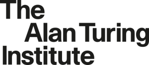
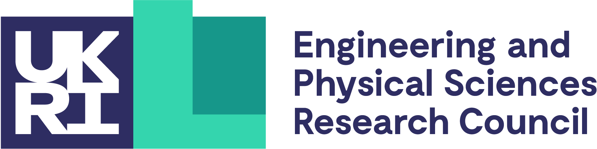
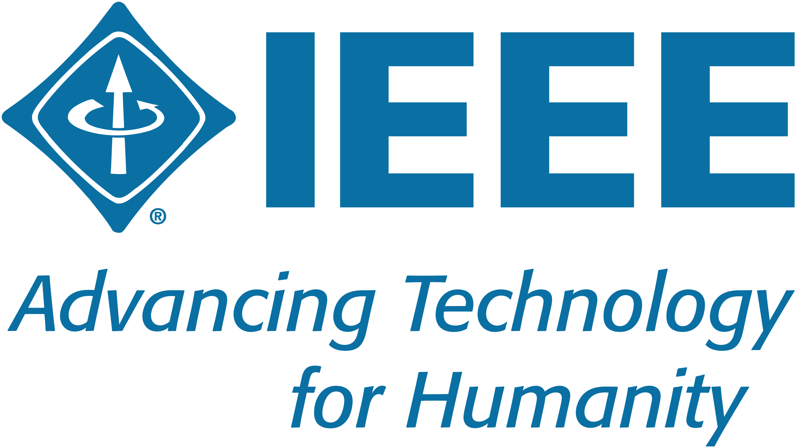

Academic Activities
International Standards Working Group
- IEEE Standards Association, IEEE P1633 Working Group (IEEE Recommended Practice on Software Reliability), See P1633 Standard;
Professional Service
- Technical Committee Member, IEEE Technical Committee on Software Engineering (TCSE)
- Trustworthy Digital Identity Interest Group, The Alan Turing Institute
- Interpretation, Verification and Modelling Interest Group, The Alan Turing Institute
- Committee Member, CCF Technical Committee on Software Engineering
- Committee Member, CCF Technical Committee on System Software
- Committee Member, Shanghai Computer Society (Software Engineering)
Professional Qualifications & Membership
- RISCS Affiliate Fellowship, The Research Institute for Sociotechnical Cyber Security (RISCS), (funded by the National Cyber Security Centre (NCSC));
- Senior Member, IEEE;
- Member, ACM;
- Member, European Alliance for Innovation (EAI);
- Member, China Computer Federation (CCF);
- Member, ISACA
Editorship
- Review Editor, Frontiers in Computer Science (Computer Security),since 2021; (ESCI indexed)
- Review Editor, Scientific Programming, Since 2021, [Certificate];
Grant/Award Review Panelist
- EPSRC Reviewer (Standard Grant, New Investigator Award), UK
- EPSRC Peer Review College Member
- NSFC Panelist (2025)
- Green Future Fellowship Assessor (2024–2025)
- Shanghai Science and Technology Award Panelist
- Shanghai SME Innovation Fund Reviewer
Conference Organizing Committee
- EASE: 2026 - Doctoral Symposium Co-chair
- Internetware: 2024 - Publicity Co-chair
Conference Session Chairs
- ISSTA: 2025 Session Chair
- ICSE: 2025, Session Chair
- FSE: 2024, Session Chair
Conference Technical Program Committee
I am/was a committe member for the following conferences/working conferences/workshops: (48 times in total)
- ICSE (Research Track): 2025, 2026, 2027
- FSE (Research Track): 2023, 2024, 2026, 2027
- WWW (Systems Track): 2024, 2025, 2026
- ASE (Research Track): 2023, 2025, 2026
- ICPC: 2022, 2023, 2024, 2026
- SANER: 2023
- EASE: 2023
- MSR: 2023, 2025, 2026
Top-tier Conferences (CORE A*/A/CCF-A)
- FSE (SRC Track): 2023
- SANER (ERA, Tool Demo): 2023, 2024
- CAiSE (Advanced Information Systems Engineering): 2023, 2024
- MSR (Industry Track): 2023
- COMPSAC: 2026
- SEKE (Software Engineering & Knowledge Engineering): 2022, 2023, 2024, 2025
- ASE (NIER Track): 2023, 2024, 2025
- APSEC: 2023, 2024, 2025, 2026
- VaMoS: 2023, 2024
- MOBILESoft (incl. Industry): 2022, 2023
- MSES, FTC: 2022
- ChinaSoft: 2021
Other Well-know Conferences and Tracks
Conference Artifact Evaluation Committee
- ICSE: 2022;
- ESEC/FSE: 2022; 2021
- PLDI: 2023; 2022;
Journal Referee
I am/was an invited reviewer for the following journals:
- IEEE Transactions on Dependable and Secure Computing (TDSC);
- IEEE Transactions on Services Computing (TSC);
- IEEE Transactions on Software Engineering (TSE);
- IEEE Transactions on Biometrics, Behavior and Identity Science;
- IEEE Transactions on Information Forensics and Security (TIFS);
- Journal of Computer Security;
- Automated Software Engineering (ASE);
- IEEE Transactions on Reliability (TR);
- ACM Transactions on Software Engineering and Methodology (TOSEM);
- IEEE Access;
- Frontier of Computer Science;
- Scientific Programming;
- SN Applied Sciences;
- The Journal of System and Software;
- SCIENCE CHINA Information Sciences
- Empirical Software Engineering
- Frontiers of Information Technology & Electronic Engineering;
- Security and Communication Networks;
- Journal of Information Technology Research; (Ad-hoc Reviewer)
- Computer Science (in Chinese);
News Interview/Media Coverage
- 12/Aug/2021 -- The Voice of China; [reference]
- 25/May/2022 -- The Voice of China; [reference]
- 23/Jun/2022 -- The Voice of China; [reference]!
- 6/Jul/2024 --- IEEE Spectrum "How Good Is ChatGPT at Coding, Really? Study finds that while AI can be great, it also struggles due to training limitations"[reference]]
Invited Talks
- UCL CREST Workshop – Invited Talk
- The 12th International Conference on Advanced Infocomm Technology - Keynote Speaker;
Workshops / Conferences
- Lund University
- Fudan University
- ShanghaiTech University
- Queen’s University Belfast
- University of East London
- University of Central Lancashire
- University of Dundee
- University of Canterbury
University Seminars
Fix/Long-term University & Department Admin Roles
- Career Liaison Officer, School of Computing Science, University of Glasgow, 10/2025 - now;
- Co-Impact Champion, Education and Practice (EAP) Section, School of Computing Science, University of Glasgow, 10/2024 - now;
University Service
- Application Evaluation, University of Glasgow
- Open Day Organisation, University of Glasgow
- Admissions and Recruitment Roles (ShanghaiTech University)


